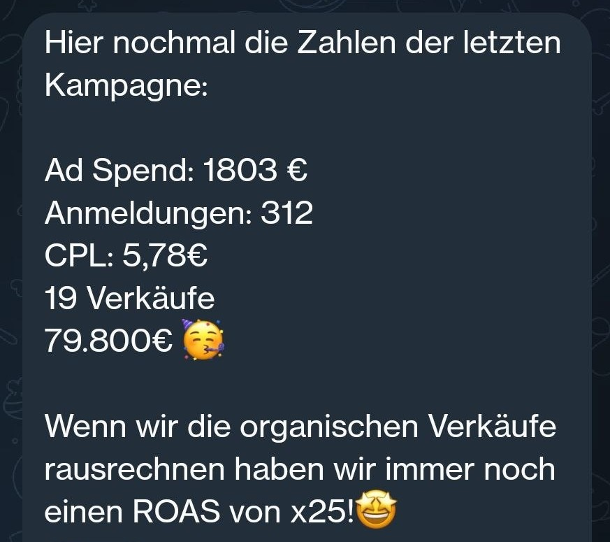

Meine Arbeit
- Webinar-Funnel-Strategie
- Ads: Creatives und Copy
- Optin-Seite und Prozess
- E-Mail-Strecke
- Verkaufsseite
Verkauf einer 3.000€ Ausbildung

Meine Arbeit
Verkauf einer 3.000€ Ausbildung

Meine Arbeit
Rund 150.000 € Launch-Umsatz. Der Screenshot zeigt den Zwischenstand bei 100k.


Verlängerst du nach drei Monaten auf sechs, rechne ich rückwirkend zum Sechsmonatspreis ab.
Website nur bei Vorauszahlung enthalten.
Du lässt das Angebot wirken und triffst die Entscheidung.
Wir besprechen letzte Details.
Das neue Kapitel Frau Maier 2.0 beginnt💎
Martin Thun